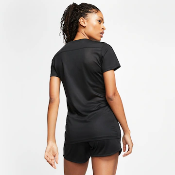
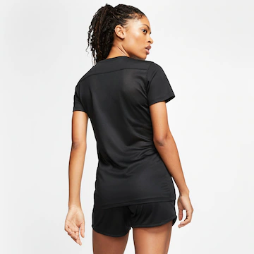
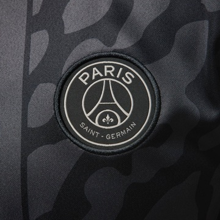
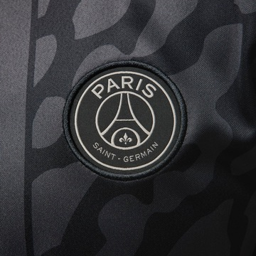

Regata Nike Dri-FIT Feminina
R$ 94,99 no Pix R$ 129,99 27% off ou R$ 99,99 em até 1x sem juros 23% off
🔹 Design moderno com DNA esportivo: A Camiseta Tiro 24 é parte da icônica linha Tiro da Adidas, pensada para atletas e apaixonados por futebol. Com um visual limpo e cortes atléticos, ela é perfeita para treinos intensos, jogos casuais ou para o look esportivo do dia a dia Tecnologia de ponta: AEROREADY: tecido que absorve a umidade, mantendo o corpo seco e confortável mesmo nos treinos mais puxados. Malha leve e respirável, feita com materiais sustentáveis (contém poliéster reciclado)..
 


Camisa Nike Dri-FIT Park Feminina
R$ 94,99 no Pix R$ 149,99 37% off ou R$ 99,99 em até 1x sem juros 33% off
🔹 Modelagem: Corte feminino ajustado ao corpo, com caimento anatômico e confortável. Tecido leve e respirável, ideal para torcedoras que vivem o clube dentro e fora do estádio. Ideal para: Torcedoras apaixonadas que querem vestir a tradição com um toque moderno. Seja nas arquibancadas ou nas ruas, ela representa mais que futebol — representa uma identidade.

 

Camisa Nike Paris Saint-Germain III 2023/24 Torcedora Pro Feminina
R$ 303,99 no Pix R$ 399,99 24% off ou R$ 319,99 em até 4x sem juros 20% off
🔹 Conforto e desempenho: Tecnologia AEROREADY, que absorve o suor e mantém o corpo seco. Modelagem feminina, com caimento ajustado ao corpo. Tecido leve e respirável, feito para o dia a dia ou para torcer com estilo.
𝖊𝖓𝖙𝖊𝖗